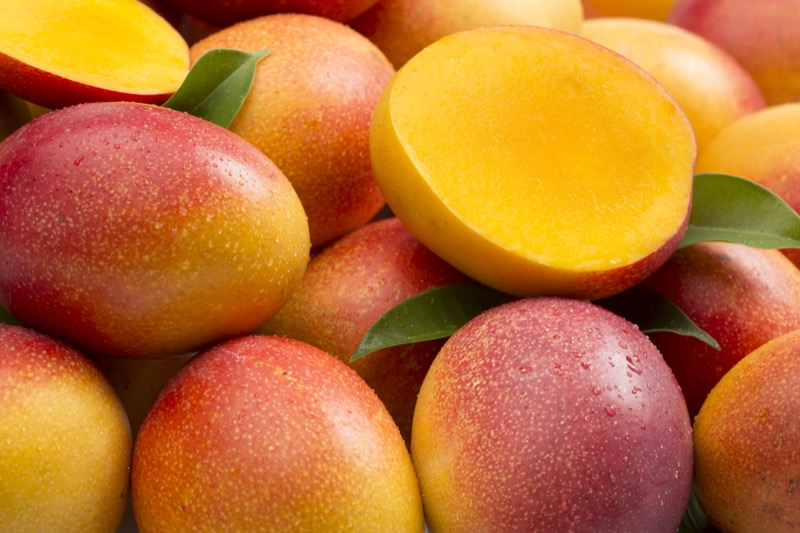

<!DOCTYPE html>
<html lang="en">
<head>
    <meta charset="UTF-8">
    <meta name="viewport" content="width=device-width, initial-scale=1.0">
    <meta name="description" content="Yamikani Foods - Fresh fruits and vegetables delivered to you. Explore our organic produce and seasonal specials.">
    <meta name="keywords" content="Yamikani Foods, organic produce, fresh fruits, fresh vegetables, local farm, sustainable agriculture">
    <meta property="og:title" content="Yamikani Foods - Fresh Fruits & Vegetables">
    <meta property="og:description" content="Discover the best fruits and vegetables at Yamikani Foods, delivered straight from the farm to your table.">
    <meta property="og:type" content="website">
    <title>Yamikani Foods - Fresh Fruits & Vegetables</title>
    <link rel="stylesheet" href="styles.css">
    <script src="https://cdn.jsdelivr.net/npm/react@18.2.0/umd/react.production.min.js"></script>
    <script src="https://cdn.jsdelivr.net/npm/react-dom@18.2.0/umd/react-dom.production.min.js"></script>
    <script src="https://cdn.jsdelivr.net/npm/babel-standalone@6.26.0/babel.min.js"></script>
</head>
<body>
    <div id="root"></div>
    <script type="text/babel">
        function App() {
            return (
                <div>
                    {/* Sidebar */}
                    <aside>
                        <h3>Announcements</h3>
                        <ul>
                            <li>
                                <a href="shop.html">
                                    <span>Good day</span><br />
                                    <span>We have closed at main mall today. We will be back on Wednesday look out for more freshness and affordable fruits and vegetables.Hope you have a splendid holidays. Your support is highly appreciated. Thank you</span>
                                </a>
                            </li>
                            <li>
                                <a href="shop.html">
                                    <span>*DELIVERY IS STILL AVAILABLE FOR FREE*</span><br />
                                    <span>*MINIMUM ORDER 150 PULA*</span>
                                </a>
                            </li>
                            <li>
                                <a href="feedback.html">
                                    <span>Join Our Newsletter</span><br />
                                    <span>Get weekly recipes and discounts!</span>
                                </a>
                            </li>
                        </ul>
                    </aside>

                    {/* Main Content */}
                    <div>
                        {/* Header */}
                        <header>
                            <div className="logo">
                                <h1>Yamikani Foods</h1>
                            </div>
                            <nav>
                                <ul>
                                    <li><a href="index.html">Home</a></li>
                                    <li><a href="shop.html">Products</a></li>
                                    <li><a href="about.html">About Us</a></li>
                                    <li><a href="contact.html">Contact</a></li>
                                    <li><a href="feedback.html">Feedback</a></li>
                                </ul>
                            </nav>
                        </header>

                        {/* Main */}
                        <main>
                            {/* Hero Section */}
                            <section className="hero">
                                <h2>Fresh, Organic, and Locally Sourced</h2>
                                <p>Discover the best fruits and vegetables at Yamikani Foods, delivered straight from the farm to your table.</p>
                                <a href="shop.html">Shop Now</a>
                            </section>

                            {/* About Us Section */}
                            <section className="about-us">
                                <h2>Our Story</h2>
                                <div>
                                    <p>At Yamikani Foods, we are passionate about bringing the freshest, organic produce to your table. Founded in 2020, our mission is to support local farmers and promote sustainable agriculture while delivering high-quality fruits and vegetables to our community.</p>
                                    <p>Our values of quality, sustainability, and community drive everything we do, from sourcing to delivery.</p>
                                </div>
                            </section>

                            {/* Featured Products */}
                            <section className="product-grid">
                                <h2>Our Featured Produce</h2>
                                <div className="products">
                                    <article className="product-card">
                                        
                                        <h3>Fresh Apples</h3>
                                        <p>Crisp, juicy apples grown organically in local orchards.</p>
                                        <a href="shop.html#apples">View Details</a>
                                    </article>
                                    <article className="product-card">
                                        
                                        <h3>Organic Spinach</h3>
                                        <p>Vibrant, nutrient-rich spinach picked at peak freshness.</p>
                                        <a href="shop.html#spinach">View Details</a>
                                    </article>
                                    <article className="product-card">
                                        
                                        <h3>Ripe Mangoes</h3>
                                        <p>Sweet and succulent mangoes, perfect for smoothies or snacks.</p>
                                        <a href="shop.html#mangoes">View Details</a>
                                    </article>
                                </div>
                            </section>

                            {/* Testimonials Section */}
                            <section className="testimonials">
                                <h2>What Our Customers Say</h2>
                                <div className="testimonial-grid">
                                    <div className="testimonial">
                                        <p>"The freshest produce I've ever had! The apples are crisp and delicious, and delivery is always on time."</p>
                                        <p className="author">— Sarah M.</p>
                                    </div>
                                    <div className="testimonial">
                                        <p>"I love the organic spinach! It's perfect for my smoothies, and I appreciate the sustainable practices."</p>
                                        <p className="author">— John K.</p>
                                    </div>
                                </div>
                            </section>

                            {/* Call-to-Action Banner */}
                            <section className="call-to-action">
                                <h2>Join Our Community</h2>
                                <p>Sign up for our newsletter to receive exclusive recipes, seasonal specials, and updates on new products!</p>
                                <a href="feedback.html">Sign Up Now</a>
                            </section>
                        </main>

                        {/* Footer */}
                        <footer>
                            <p>Contact us: yamikanifoods@gmail.com | +267 72 857 551</p>
                            <p>© 2025 Yamikani Foods. All rights reserved.</p>
                        </footer>
                    </div>
                </div>
            );
        }

        ReactDOM.render(<App />, document.getElementById('root'));
    </script>
</body>
</html>